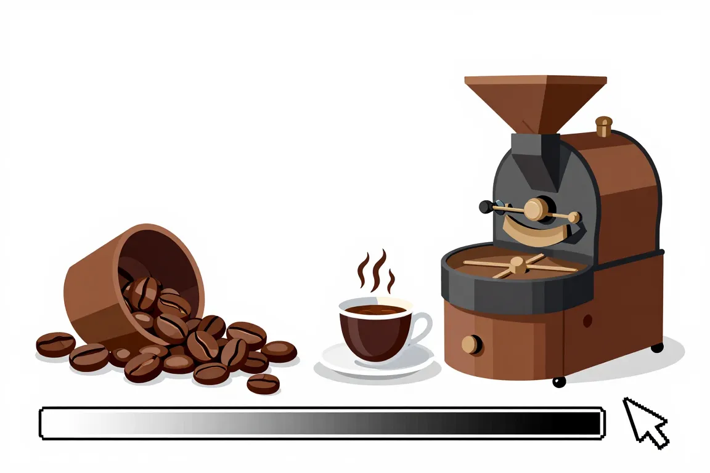

Сайт на всё окно, построенный как векторная анимация: полоса загрузки, ссылка «пропустить заставку», крошечный пиксельный шрифт, свои курсоры, звук и переходы между разделами. Сделала возможным Macromedia Flash.

Главная идея
Сайт — представление: управляйте каждым пикселем и каждой секундой и заставьте посетителя ждать.
Принципы дизайна
Заполняйте окно одной сценой и центрируйте фиксированную область 800px на 600px или 1000px на 600px.
Открывайте полосой загрузки 1–4px и счётчиком от 0% до 100%, затем заставкой на 5–20 секунд.
Ставьте ссылку «пропустить заставку» 11px в нижний угол, видимую с первого кадра.
Набирайте навигацию пиксельным шрифтом 8–10px прописными с трекингом 0,1em и размещайте её на свободном пути.
Вводите каждый раздел твином: сдвиг 40–120px со смягчением ease-out за 400–800мс.
Берите один акцент (#FF6600) на тёмном фоне (#111111) и держите остальное в серых тонах.
Следуйте за указателем: элемент тянется за курсором со смягчением 0,1–0,2.